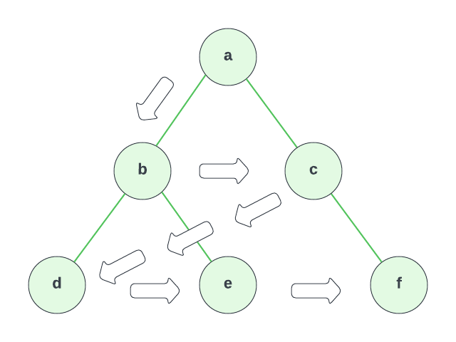

Breadth-First Traversal
Now, let's explore another traversal algorithm for binary trees called Breadth-First Traversal. Unlike depth-first traversal, which explores as far as possible along each branch before backtracking, breadth-first traversal explores all the nodes at the current depth level before moving to the next level.
To illustrate this algorithm, let's consider the same binary tree we used in the depth-first traversal example:

For breadth-first traversal, we start at the root node a and visit its children, b and c, in order. Then, we move down to the next level and visit the children of b and c, which are d, e, and f. We continue this pattern, visiting all nodes at the current level before moving to the next level.
So the order of traversal in this example would be a, b, c, d, e, f.
To implement the breadth-first traversal algorithm, we'll use a queue data structure. A queue is a FIFO (First In First Out) data structure, which means the first node we add to the queue will be the first node we remove from the queue. We'll start by pushing the root node onto the queue and then iterate through the queue, adding the children of each node to the queue as we visit them.
Let's implement the breadth-first traversal in TypeScript:
export class Node<T> {
data: T;
left: Node<T> | undefined = undefined;
right: Node<T> | undefined = undefined;
constructor(data: T) {
this.data = data;
}
}
export function breadthFirstTraversal<T>(root: Node<T> | undefined): T[] {
if (!root) {
return [];
}
const result: T[] = [];
const queue: Node<T>[] = [];
queue.push(root);
while (queue.length > 0) {
const current = queue.shift();
current && result.push(current.data);
if (current?.left) {
queue.push(current.left);
}
if (current?.right) {
queue.push(current.right);
}
}
return result;
}
In this implementation, we first check if the root node exists. If it doesn't, we return an empty array.
We then create a result array and a queue array. We push the root node onto the queue.
We then start a while loop that runs as long as the queue array has a length greater than 0.
Inside the loop, we dequeue the first node from the queue (using shift()) and add it to the result array.
We then enqueue the left and right children of the current node, if they exist. We continue this process until the queue array is empty, and then we return the result array.
Using the Queue Class
Now, let's refactor this code to use the Queue class. You can do this as an exercise, or you can look at the code below.
export class Node<T> {
data: T;
left: Node<T> | undefined = undefined;
right: Node<T> | undefined = undefined;
constructor(data: T) {
this.data = data;
}
}
export function breadthFirstTraversal<T>(root: Node<T> | undefined): T[] {
if (!root) {
return [];
}
const result = [];
const queue = new Queue();
queue.enqueue(root);
while (!queue.isEmpty()) {
const current = queue.dequeue();
result.push(current.data);
if (current.left) {
queue.enqueue(current.left);
}
if (current.right) {
queue.enqueue(current.right);
}
}
return result;
}
In this refactored code, we used the Queue class instead of a standard array for the queue data structure. We also used the isEmpty() method instead of checking the length of the array. We then added tests to ensure that the breadth-first traversal algorithm works correctly.
There is not really a straightforward way to solve this problem recursively without using a queue data structure. You could use a stack data structure, but you would have to keep track of the current level of the tree and the next level of the tree. This would make the code more complicated and less efficient. So this is likely the best way to do breadth-first traversal.